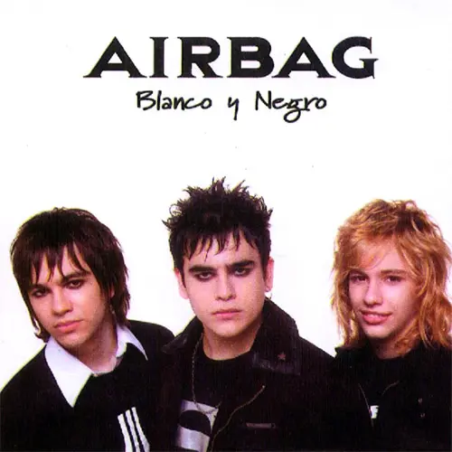
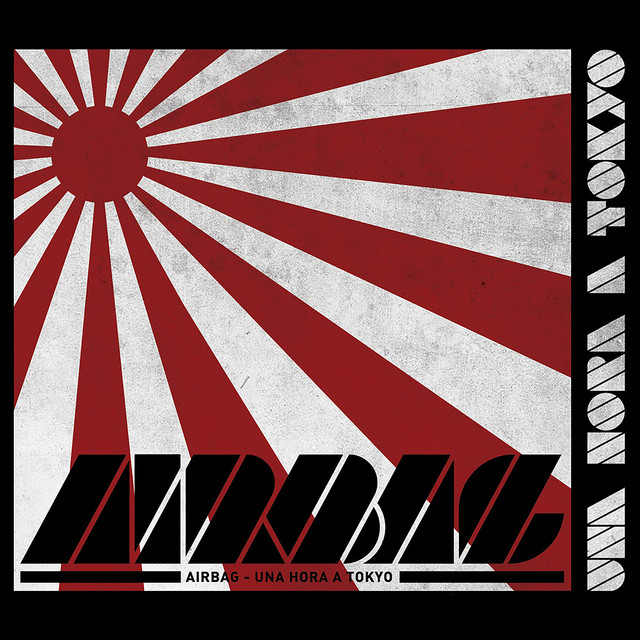
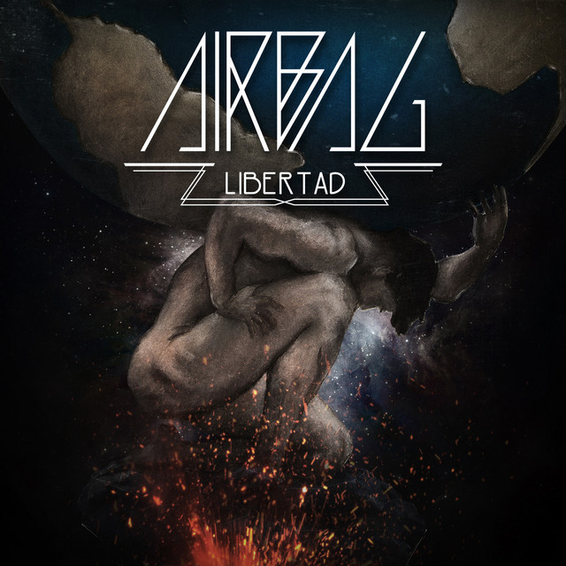
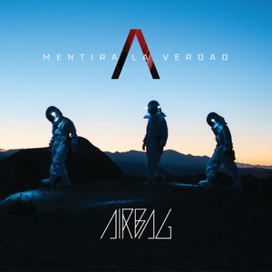

AIRBAG
Airbag es un grupo musical de Argentina formado en Don Torcuato, partido de Tigre en el año 2004. El grupo fue fundado y es integrado por los hermanos Gastón Sardelli, Patricio Sardelli y Guido Sardelli. Empezaron a tocar juntos a mediados de los años 90's bajo el nombre de Los Nietos de Chuck, donde hacían covers de Chuck Berry, The Beatles, Creedence, entre otros.
Primeros Álbumes
Airbag (2004)
En 2003 firmaron un contrato con Warner Music. Su primer disco, 'Airbag' (2004), obtuvo el disco de oro y el de platino en Argentina. Fue grabado en los estudios ION de Buenos Aires, en cinta, lo que le dio un sonido particular, con características del rock de los 80. Cuando los realitys dominaban los medios, esta banda se abrió un camino escribiendo sus propios temas y renovando la confianza de las compañías discográficas que sólo apostaban a proyectos televisivos. Fueron premiados por la cadena MTV como 'Artistas Nuevos' y por los lectores de la revista Rolling Stone como 'Banda Revelación'. Las canciones La partida de la gitana, Quiero estar contigo, Solo aquí y Ya no recuerdo (todas de la autoría de Patricio Sardelli), lideraron los rankings de su país como de los limítrofes. Luego de una extensa gira por Argentina, Paraguay, Bolivia y Uruguay, realizaron dos funciones en el Gran Rex de Buenos Aires, agotando entradas y marcando un hit en la música argentina, ya que hacía mucho tiempo que una banda no salida de un reality con tan solo un disco no lograba dicha convocatoria.

Blanco y Negro
A principios de 2006, Airbag viajó a España a grabar su segundo álbum, Blanco y Negro, cuya presentación se realizó en el Estadio Luna Park a sala llena, tocando los 3 hermanos Sardelli, además de los prestigiosos músicos Willie Lorenzo y Claudio Ledda. Ese mismo año también participaron en la banda sonora de Alma Pirata con la canción de Toda una vida esperándote. Instrumentalmente, el disco es una continuación de lo que fue su álbum debut. Muchas canciones eran de la misma época de dicho álbum ya que el grupo nunca dejó de tocar en ese periodo. Además, la banda viajó a Chile para la edición de su nuevo disco y realizó acciones promocionales. Ese disco los llevó de gira por Ecuador, Colombia, Paraguay, Bolivia, Perú y México. En 2007 ganaron los Premios MTV como Mejores Artistas Revelación del Sur.
Una Hora a Tokyo (2008)
Airbag decidió terminar la gira y dedicarse a trabajar en nuevas canciones, lo que no habían podido lograr con el disco anterior. Es así que a fines del 2007 comenzaron a trabajar en las primeras melodías que formarían parte de Una hora a Tokyo, el tercer disco de estudio, en honor a un tristemente célebre discurso dado por el expresidente Carlos Saúl Menem en agosto de 1996, donde mencionaba un supuesto plan del Estado para crear un sistema de naves que iban a viajar a la estratósfera y en una hora poder estar en Tokio o París. Una hora a Tokio presentó importantes cambios en la banda. Guido decidió que seguiría grabando las baterías pero en las presentaciones en vivo sería la guitarra rítmica y voz de varios temas. Las canciones Mi sensación, Revolución y Lejos del sol lo tienen por protagonista como cantante. Este álbum generó una nueva etapa en la carrera de la banda, tanto musical como estructuralmente, ya que entraron en un conflicto legal con su exmánager y, cansados de las formas de la industria, decidieron emprender su propio camino y romper también con la discográfica Warner. Uno de los primeros conciertos en los que participaron con Una hora a Tokyo fue en el festival solidario ALAS junto a Shakira, Alejandro Sanz y Calle 13. Ese mismo año, fue nominado a los premios Grammy por Mejor disco de Rock y Mejor canción de Rock. Viajaron a Las Vegas para el evento realizado en el MGM.
Vorágine (2011)
Luego de al menos dos años de parate tras llevar a juicio a su ex-mánager y el fin definitivo con la multinacional Warner Music el trío comenzó a trabajar en lo que sería su cuarto disco. Explicó Patricio a la revista Sí! de Clarín que mientras arreglaban toda la situación tuvieron mucho tiempo para componer las nuevas canciones para el disco (han compuesto casi 100 de las cuales 12 quedaron incluidas en el disco), y finalmente se lanzaron de forma totalmente independiente. El 20 de septiembre de 2011, salió a la venta su nuevo disco, Vorágine. Lo presentaron oficialmente en el Teatro Gran Rex el 7 de diciembre de 2011 a sala llena. Con este show comenzó la grabación de su próximo DVD, para el cual también se registraron hasta el momento imágenes de sus conciertos en La Trastienda de Buenos Aires, en el Teatro Broadway de Rosario y demás ciudades de su gira nacional. Han compartido escenario con este disco en conciertos con Calle 13 y Catupecu Machu, entre otros. Fueron seleccionados como banda invitada de los shows de Noel Gallagher en Argentina para las ciudades de Córdoba y Buenos Aires. En agosto del 2012 estrenan el vídeo de la canción Cae el Sol, dirigido por Patricio Sardelli y Gabriel Grieco, que fue un éxito en todas las radios del país. Y el video musical tuvo mucha repercusión al tratar con profundidad el tema del tráfico de personas, intentando buscar concientización sobre el tema. En octubre viajó a Chile para empezar su gira por Hispanoamérica en el Movistar Arena de Santiago, en noviembre regresaron a Argentina para realizar cuatro conciertos en el Teatro Vorterix de Buenos Aires a sala llena. A partir de este período en adelante Patricio será director de todos los videoclips de la banda. En el medio de su gira participó en el festival realizado por organizaciones sociales pidiendo justicia por Mariano Ferreyra. También se presentarán brindando apoyo a los familiares de la tragedia de Once.

Libertad (2013)
En noviembre del 2013, editaron Libertad, el quinto álbum de estudio. El primer sencillo que dan a conocer es Por mil noches y luego Libertad como lado B. Emprendieron una gira por el interior del país, después de tocar dos noches en el Luna Park. Recibieron dos nominaciones a los Grammy y ganaron un premio de MTV Europa a Mejor artista latino. De este disco se lanzaron cinco videoclips, "Por mil noches", "Noches de insomnio", "Todo pasa", "Sonidos criminales" y "Fugitivo". "Sonidos criminales" se llevó dos premios al mejor videoclip del año 2015, por la cadena de televisión Quiero música en mi idioma, Mejor video banda y por la revista digital stereomusica.com Mejor videoclip del año. Ese mismo año también participaron en la banda sonora de la película Naturaleza muerta (película estrenada en el Festival de Cannes 2014), con la canción del mismo nombre y su correspondiente videoclip. Patricio actuó en algunas escenas del filme. En la canción "Fugitivo", Ricardo Mollo grabó el solo de guitarra.
Mentira la Verdad (2016)
En 2016, lanzaron su nuevo disco llamado Mentira la Verdad, presentándolo en septiembre de ese año, en una gira que comenzó en el Luna Park y se extendió por todo el país. El primer sencillo de este álbum fue Vivamos El Momento, canción que fue todo un éxito, liderando en su momento las listas de Spotify. El 15 de septiembre, se realizó la presentación del disco a la prensa y finalmente el 16 de septiembre salió a las calles con una firma de discos en el Musimundo de Callao y Corrientes. La extensa fila de fanáticos de la banda se quedaron acampando desde el día anterior y sorpresivamente los Airbag les llevaron pizzas a la medianoche. Este mismo luego de que ninguna banda argentina sea aceptada por la producción de los Guns N' Roses, que es convocada para ser su banda de apertura en los dos conciertos que brindaron en el Estadio River Plate. Luego de esta presentación, los mismos músicos de los Guns N' Roses dieron a conocer en medios de los Estados Unidos la potencia en vivo de la banda argentina. Después de agotar las localidades en tres presentaciones en el Luna Park con Libertad, el 1 de octubre presentaron en vivo el nuevo disco, otra vez a sala llena en el Luna Park. Allí la banda anunció la gira que seguiría después de esa presentación. Estuvieron en Tucumán, Salta, Córdoba, Rosario, Mendoza, entre otras provincias. Cerraron el 2016 con un hecho histórico para la historia de la banda, ser seleccionada para tocar en la reapertura del mítico estadio Obras Sanitarias. Luego de un gran año, en 2017 iniciaron con una apuesta casi imposible para la escena musical argentina que emprendieron un proyecto que consistía en mezclar rock con música clásica, cuya primera prueba en vivo se dio en la Usina del Arte y fue todo un éxito quedando sin entrada una multitud de seguidores. Ese mismo año fueron la banda elegida por Bon Jovi para la apertura de sus shows en el Estadio Vélez Sarfield. Realizaron una serie de conciertos en el Teatro Vorterix de cada viernes del mes de junio agotando las entradas para los 5 shows en horas de salir a la venta. El 8 de diciembre presentaron un recital llamado Sinfónico Ultra que mezclaba rock y música clásica. El recital se realizó con 60 músicos en escena, en el estadio Luna Park, agotando todas las entradas. En esta ocasión se montó un concierto con una puesta en escena no vista hasta el momento en el país en un contexto de música clásica y rock. En 2018, la banda inicia el año debutando en el Festival "Cosquín Rock" en la ciudad homónima en Córdoba en febrero. En marzo vuelven a tocar en Lima, después de no ir a Perú en 11 años, al igual que México donde son invitados a tocar en el "Vive Latino" de México. En abril de ese año, la banda vuelve al Estadio Obras Sanitarias bajo el festival "Rock N' Chop" junto con Attaque 77, y posterior a esto, se termina el ciclo de Mentira la Verdad.
Antesala de un nuevo álbum (2018-2021)
El 12 de septiembre de 2018 publican Como Un Diamante como sencillo adelanto de su próximo disco y lo presentan en el Teatro Vorterix a los días, y en octubre viajan de nuevo a Perú y México para presentarlo. El 22 de noviembre se publica un nuevo adelanto llamado Así de Fácil, y en diciembre los presentan en dos fechas en el Teatro Vorterix despidiendo el año. En 2019 en el mes de febrero debutan en el festival "Rock en Baradero". En junio vuelven a México, al mes siguiente a Perú y en agosto a Uruguay. El 12 de septiembre lanzan Über Puber, con la colaboración del realizador de directos "Momo" en el videoclip de la canción. El 13 de octubre publican Perdido, teniendo mucha repercusión; ese mismo mes telonean a Muse en el Hipódromo de Palermo frente a más de 12.000 personas. En el mes de diciembre vuelven a Colombia después de varios años, también para el "Jingle Bell Rock Festival" y como de costumbre cierran el año con doblete en el Teatro Vorterix. En 2020 empiezan fuerte el año al presentarse en el escenario principal del "Cosquín Rock" de Córdoba y son invitados a tocar en festivales como "Lollapalooza" de Argentina, "Asunciónico" de Paraguay, "Cosquín Rock" de España y más países, más sumado a la publicación de su próximo disco, pero la pandemia de COVID-19 retrasó los planes. Ese mismo mes ellos empiezan con una sección de lives en Youtube y Twitch llamado "Airbag Live Show", mientras duraba la cuarentena del 2020; mientras siguen con la grabación de su próximo disco En septiembre realizan su primer show por streaming desde el Teatro Vorterix con el estreno de una nueva canción adelanto titulada Mila, Saturno y el Río. El 2 de octubre de 2020 publican la canción antes estrenada llamada Mila, Saturno y el Río. En diciembre realizan el primer show presencial desde el inicio de la pandemia, despidiendo el año en Mandarine Park. En mayo de 2021 publican como sencillo un cover de "La balada del diablo y la muerte" de la banda argentina La Renga como conmemoración de los 25 años del disco Despedazado por mil partes de 1996 de la banda.

Al parecer todo ha sido una trampa (2021)
El 23 de septiembre de 2021 se publica un nuevo sencillo Intoxicarme (con videoclip). El 13 de octubre se publica Pensamientos, logrando mucha repercusión. El álbum que se publica el 15 de octubre, conteniendo 17 tracks, incluyendo Perdido, Como un diamante, Pensamientos y una canción a dúo con Los Enanitos Verdes llamada Volver a casa. La presentación del disco fue el 5, 6 y 7 de noviembre en el Teatro Gran Rex, el 11 de diciembre del 2021, tocaron en el Estadio Obras Sanitarias comenzando la gira de "Jinetes Cromados Tour" y pasó por varios puntos del interior del país y del exterior para 2022. En varias entrevistas, los integrantes de la banda han dicho que el álbum pretende tener un concepto a lo largo de sus 17 canciones, y que fue realizado en 3 sesiones distintas, entre 2018 y 2021, por lo que la lista de canciones y el mismo álbum mutó de varias formas. El 24 de septiembre de 2022, tocaron por primera vez en su carrera, de manera solitaria, en un Estadio, siendo este el Estadio Diego Armando Maradona, para cerca de 22 mil personas Tras agotar dos Movistar Arena el 20 y 21 de mayo de 2023 la banda se prepara para dictar el show más grande de su carrera en el Estadio Vélez Sarsfield el 15 de diciembre, dando así por finalizado el Jinetes Cromados Tour (2021-2023)

Nunca lo olvides (2023-2024)
Una semana antes de su show en el estadio de Vélez Sarsfield, la banda lanza el primer sencillo de lo que será su octavo disco titulado Nunca lo olvides y que fue interpretado por primera vez en dicho estadio.

Este es el ultimo tema musical que lanzo airbag